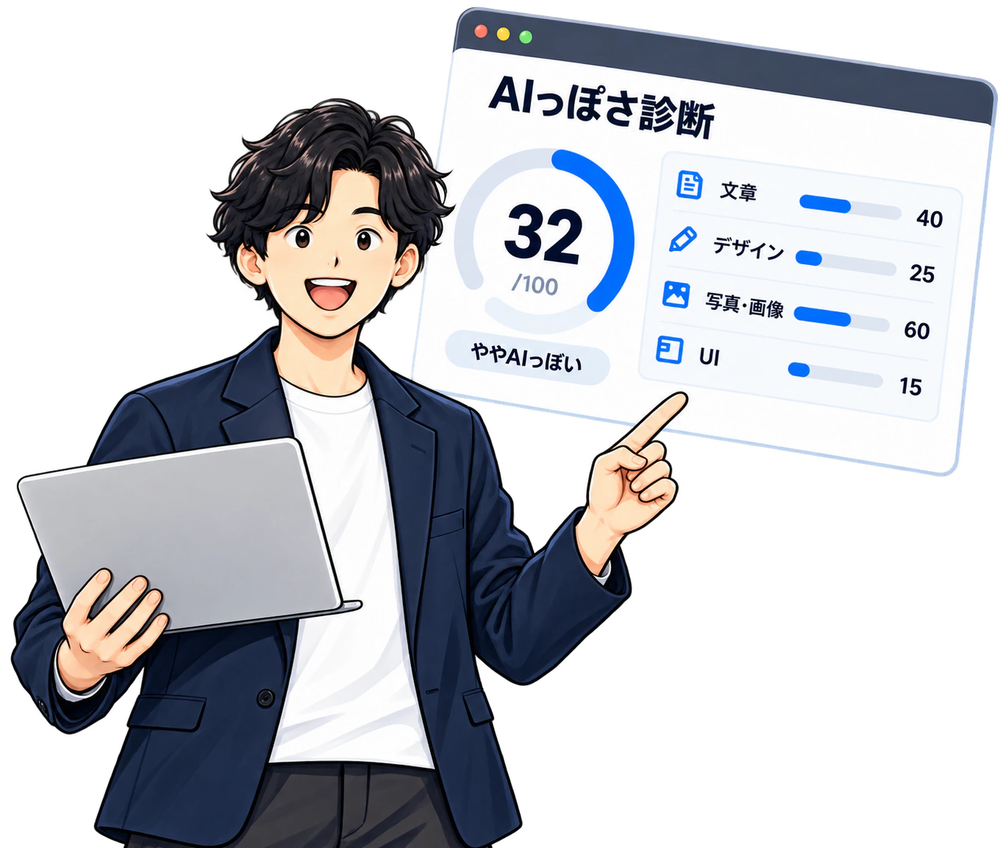
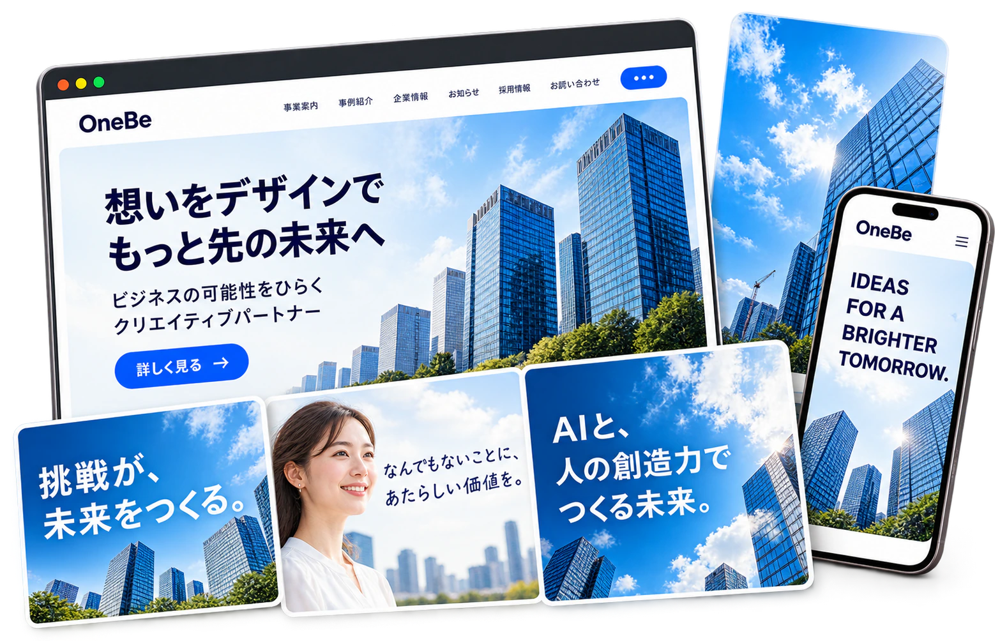

信頼の向上
AIっぽさを適切にコントロールし
人らしい温度感で安心感を提供。
そのサイト、AIっぽく見えていませんか？
WebサイトがどのくらいAIらしく見えるか
4つの視点で分析します。
※ 個人情報の入力は不要です。どなたでも無料で診断いただけます。

見た目ではわからない
“AIっぽさ”を
プロの視点でチェック！
AIは、使い方次第でビジネスを大きく進化させる力を持っています。
OneBeの「AIっぽさ診断」で現状を知り、信頼・差別化・伝わる表現を
手に入れ、自社らしい魅力をもっと届けましょう。
AIっぽさを適切にコントロールし
人らしい温度感で安心感を提供。
自社らしさが伝わる表現で
競合と差をつける。
ターゲットに響く、
自然で魅力的な表現へ。
診断だけじゃない、OneBeのクリエイティブ支援
バナー、Webサイト、ビジュアル、ブランド設計まで。
貴社の想いや強みをカタチにし、伝わるクリエイティブで
ビジネスの成長をサポートします。

診断に関するよくある質問をまとめました。
一般公開されているWebサイトのURLを入力する想定です。ログインが必要なページや、閲覧制限のあるサイトは対象外です。現在はデザインプレビューのため、実際の解析は行いません。
はい。Webサイトやデザインの改善について、OneBeへご相談いただけます。メールで相談する
このデザインプレビューは無料でご覧いただけます。制作や改善のご依頼については、内容に応じて個別にご案内します。
文章、デザイン、写真・画像、UIの見直しから、自社らしさを伝えるクリエイティブ制作までご相談いただけます。
このプレビューで入力したURLは、サーバーに送信・保存されません。入力内容は、この画面内の確認表示にのみ使用します。
AIとのちょうどいい付き合い方で、もっと伝わる、もっと選ばれるサイトへ。
※ 個人情報の入力は不要です。どなたでも無料で診断いただけます。